マップエディター:作成ツール
頂点・エッジ・面、クリッパー、CSG、ブラシの形、変形、パッチ、テクスチャ、リージョン、フィルター、レイヤー、モデル。NetRadiant-Custom のツールを、同じキー、メニュー、ダイアログで使えます。
頂点、エッジ、面#
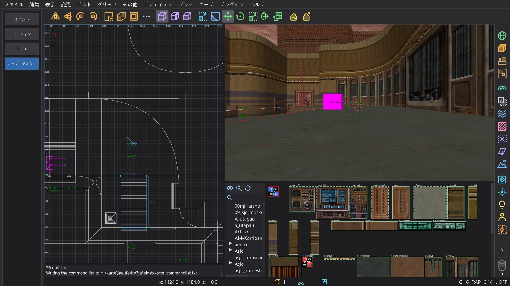
ブラシかパッチを選び、V(頂点)、E(エッジ)、F(面)を押します。クリックで点を選び、ドラッグでブラシの形を変えます。NetRadiant-Custom と同じく、ブラシは点から作り直されます。同じキーをもう一度押すと通常の選択に戻ります。B はビルドツール(押し出し、チェーンの作成、複製)、G は面のテクスチャ用の UV ツールです。テクスチャロック(Shift+T)を使うと、ブラシを動かしてもテクスチャがずれません。
クリッパー#
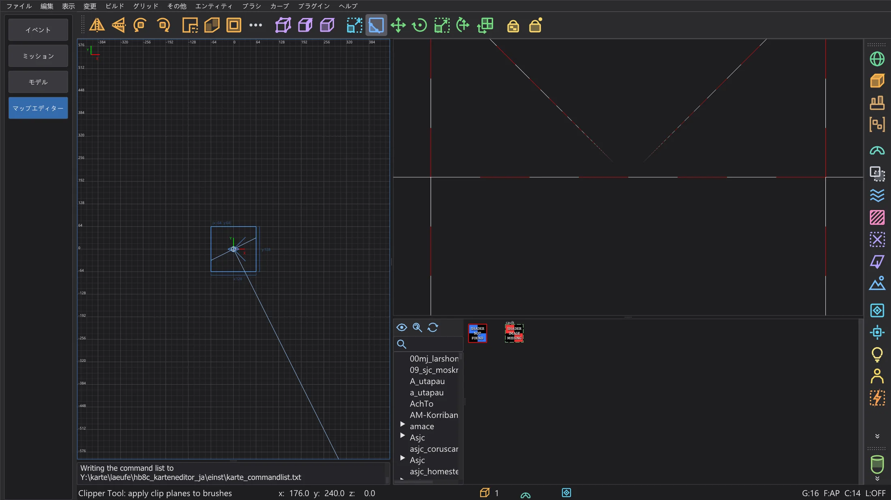
ブラシを選んで X を押します。2D ビューで最大 3 点、またはカメラで面をクリックして切断面を決めます。点はドラッグで直せます。Enter で切って片側を残し、Shift+Enter で両側に分け、Ctrl+Enter で残す側を反転します。ダブルクリックは、設定ページ クリッパー の選択に従って切断か分割をします。
CSG#
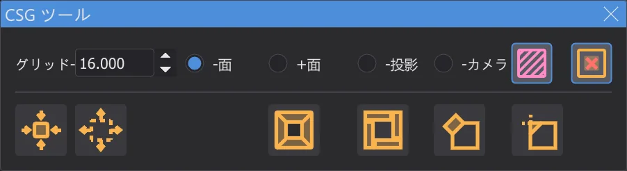
ブラシ > CSG:CSG 減算(Shift+U)は選択したブラシを、触れているものすべてから切り抜きます。CSG 結合 はブラシを 1 つの凸ブラシにまとめ、CSG ラップ結合(Ctrl+U)は 1 つで包み、CSG 交差(Ctrl+Shift+U)は共通部分だけを残し、部屋を作る はブラシを中空の部屋にします。ディテールにする(Alt+D)と ストラクチャルにする(Alt+S)はディテールのフラグを設定します。
ブラシの形と変形#
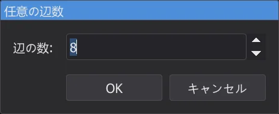
ブラシ は選択したブラシを 角柱、円錐、球、岩、正二十面体 にします。小さなダイアログで辺の数を聞きます。Ctrl+3〜9 は、アクティブな 2D ビューの軸の周りにその数の辺を持つ角柱を作ります。変更 は選択範囲をその中心で回転・反転し、任意の回転(Shift+R)と 任意の拡大縮小(Ctrl+Shift+S)は正確な値を入力できます。変換を繰り返す(Ctrl+R)は直前の移動・回転・拡大縮小を繰り返し、変換をリセット(Alt+R)はそれを忘れます。
パッチ#
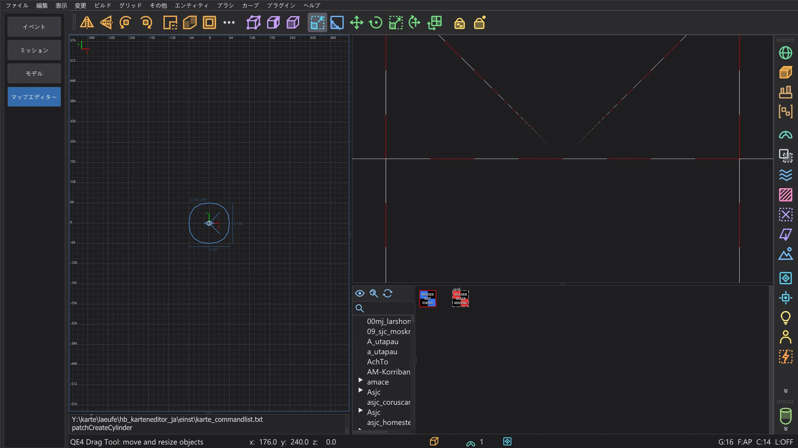
カーブ メニューは選択範囲にパッチを作ります。平面(単純なパッチメッシュ、Shift+P)、ベベル、エンドキャップ、円柱、円錐、球、そしてサイズを指定するダイアログ付きの正確な形です。挿入/削除 は行と列を追加・削除し、マトリックス は反転(Ctrl+I)、転置(Ctrl+Shift+M)、再分配、平滑化をします。選択にキャップ(Shift+C)は端を閉じ、厚みを付ける(Ctrl+T)はパッチに厚みを付け、変形 はランダムに変形します。パッチのテクスチャ:自然に合わせる(Ctrl+N)、X と Y の反転、リセット。
テクスチャ#
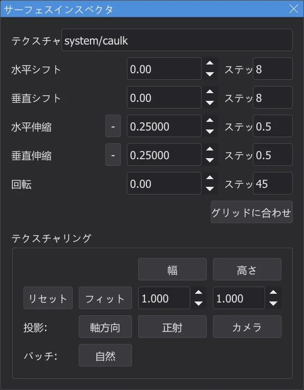
サーフェスインスペクタ(S)は選択した面のテクスチャを表示します。オフセット、スケール、回転、矢印キーの刻み、フィット(Ctrl+F)、投影(軸、正投影、カメラから)です。ウィンドウなしでも、Shift + 矢印キーでテクスチャを動かし、Ctrl + 矢印キーで拡大縮小し、Shift+PgUp / PgDn で回転します。同じテクスチャを選択(Ctrl+Shift+A)は現在のテクスチャを使うすべての面を選択します。タグ GUI を使うと、テクスチャブラウザーでタグを使ってテクスチャを整理できます。
選択、リージョン、ファイル#
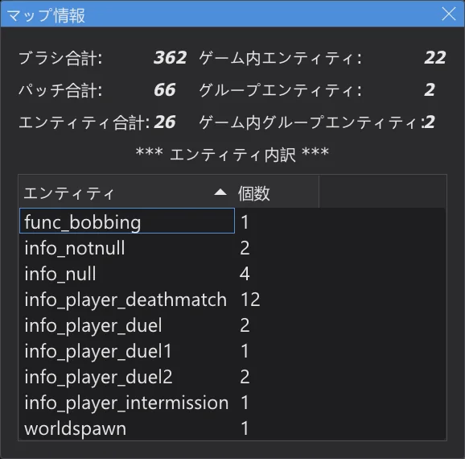
内側を選択 と 接触しているものを選択 は、選択したブラシの内側にあるもの、または触れているものを選びます。表示 > リージョン はマップの一部だけを表示します。XY で設定(2D ビューの表示範囲)、ブラシで設定、選択で設定(Ctrl+Shift+R)、オフ です。ファイル > リージョンを保存 はリージョンを周囲の壁とプレイヤー開始点付きで保存し、選択範囲を保存 は選択範囲だけを保存し、インポート は別のマップを追加します。ブラシを検索 はエンティティ番号とブラシ番号でブラシを選びます。マップは 15 分ごとに自動保存されます(設定ページ 自動保存)。
フィルター#
表示 > フィルター と右のフィルターバーで、種類ごとにオブジェクトを隠します。ワールドブラシ(Alt+1)、エンティティ、caulk、クリップ、液体、ディテールブラシ、パッチ、ライト、モデル、トリガーなどです。一部のボタンは、ツールチップのとおり右クリックで別の操作をします。選択範囲をディテールまたはストラクチャルにする、func_group を作る、caulk やツールテクスチャを貼る、などです。フィルターを反転 と フィルターをリセット ですべてを反転またはオフにします。
レイヤー#
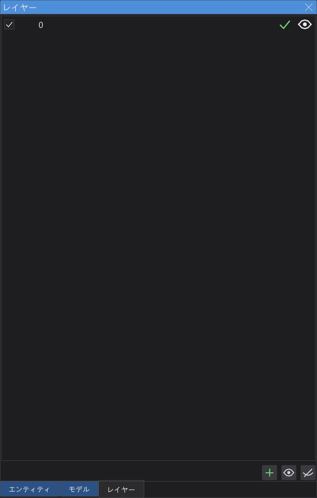
レイヤーはマップの部分をまとめます。レイヤーブラウザー(L)でレイヤーを作成・名前変更し、ドラッグで入れ子にし、目のアイコンで表示・非表示を切り替え、選択範囲をレイヤーに移します(Shift+Q)。Ctrl+Q は選択範囲をそのレイヤー全体に広げます。新しいオブジェクトは現在のレイヤーに入ります。NetRadiant-Custom と同じく、レイヤーは .map ファイルに保存されます。
モデル#
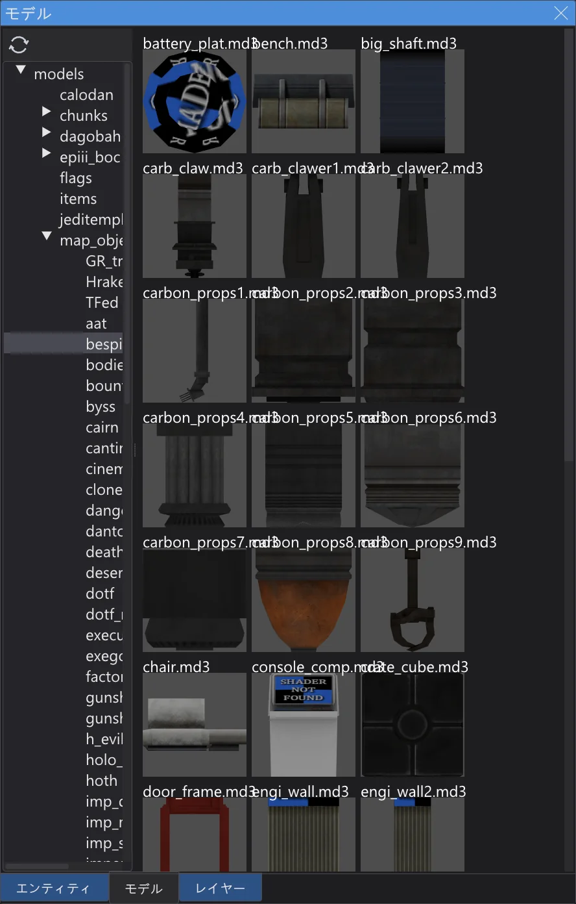
misc_model などのエンティティは、両方のビューでモデル(.md3、.glm、.ase)をスキン、modelscale、角度付きで表示します。モデルブラウザー(/)ではフォルダーをダブルクリックするとそのモデルを読み込みます。モデルをクリックすると選択中のエンティティに割り当て、ダブルクリックするとカメラの前に新しい misc_model を置きます。モデルを変更したら モデルを再読み込み で読み直します。
設定#
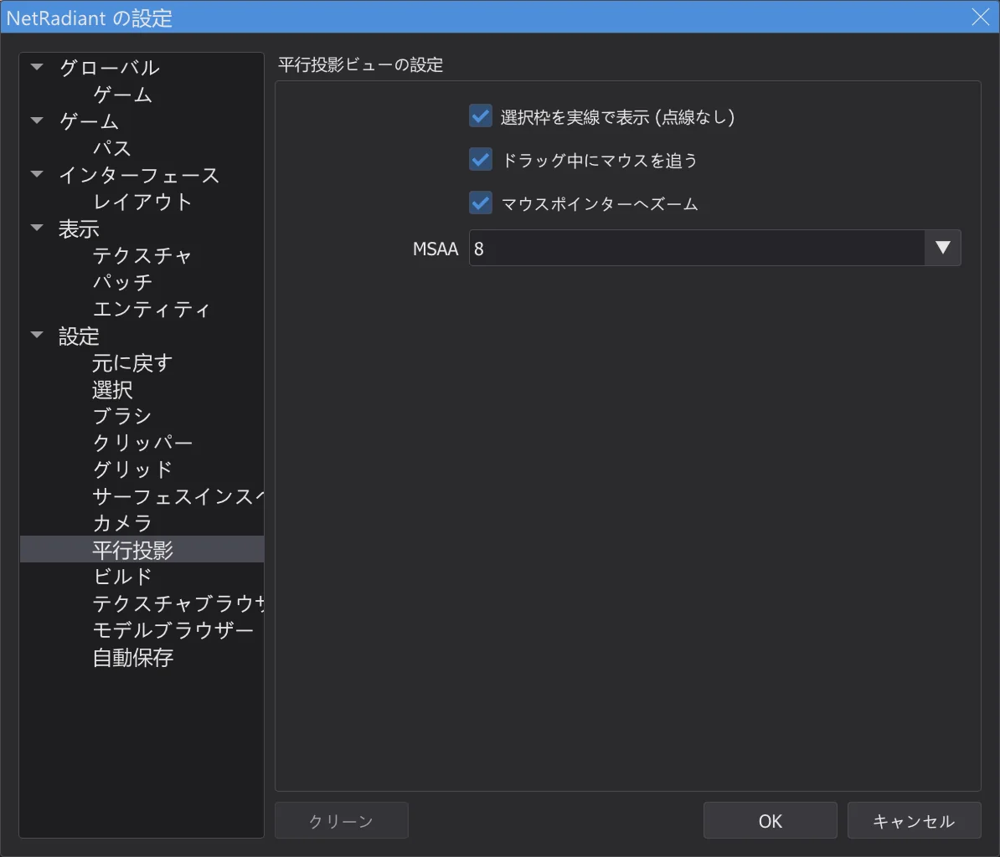
NetRadiant-Custom の設定のすべてのページが機能します。ブラシ(既定のテクスチャ倍率、新規マップのブラシ形式、常に caulk)、グリッド、元に戻す、平行投影(選択枠の実線/点線、ドラッグ中に端でマウスを追う、マウスポインターへズーム)、ビルド、設定(複製後に少し移動、起動時に前回のマップを開く)です。ゲーム では Jedi Academy か Jedi Outcast、Mod、マッピングモード(シングル/マルチプレイヤーのエンティティ)を選び、パス ではゲームフォルダーと最大 5 つの追加フォルダーを指定します。別のゲームを選ぶと、NetRadiant-Custom と同じくマップエディターの再起動を確認します。
メニューとウィンドウ#
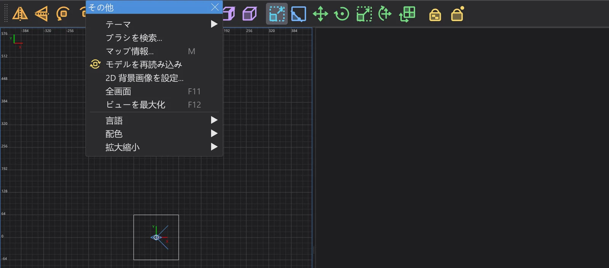
メニュー上部の破線をクリックすると、開いたままのウィンドウとして切り離せます(レイアウト ページの 切り離し可能なメニュー)。その他 > 全画面(F11)で全画面にし、ビューを最大化(F12)でマウスの下のビューを拡大します。OpenGL フォント は 2D ビューとカメラのフォントを選び、2D 背景画像を設定 は画像ファイルをアクティブな 2D ビューの選択範囲に置いて、なぞり描きに使えます。プラグインは マップエディター:プラグイン ページ、q3map2 によるコンパイルは マップエディター:マップのビルド ページで説明しています。